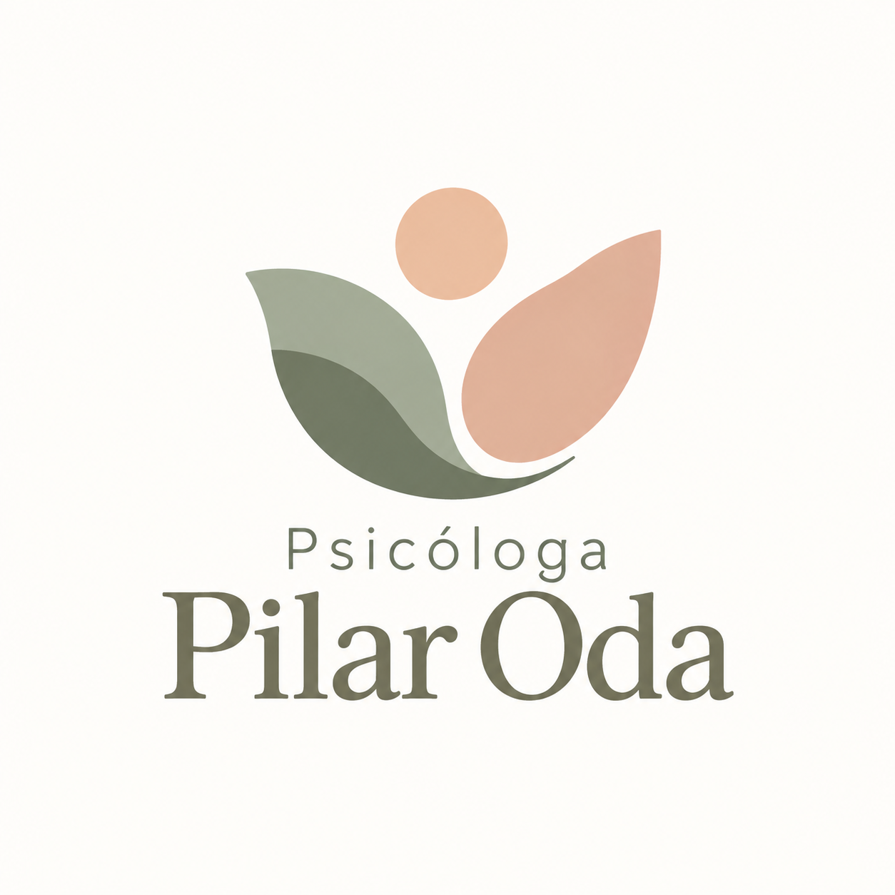

Escucha sin juicios
Tu experiencia merece un lugar y una escucha atenta.

Psicóloga Pilar OdaPSICOLOGÍA & BIENESTARPSICOLOGÍA · UN ESPACIO PARA TI
Un lugar para detenerte, escucharte y empezar a encontrar tu propia manera de estar bien.
Demos el primer paso A tu ritmo, desde donde estásBIENVENIDA / BIENVENIDO
Necesitas un espacio donde puedas ser tú misma, incluso con aquello que te cuesta mirar.
Aquí no tienes que ser el paciente perfecto ni llegar a ningún lugar determinado. Puedes hablar de las verdades difíciles sin miedo a ser juzgado.
La terapia busca que la seguridad no sea solo una comprensión mental, sino también una experiencia corporal.
Conoce este espacio01 / MI ENFOQUE
A veces, lo que necesitamos es un espacio para mirar lo que nos pasa con un poco más de calma.
La propuesta es construir una conversación cercana y respetuosa, en la que puedas expresar lo que sientes sin tener que cumplir expectativas.
Cada historia tiene sus propios tiempos. El proceso se irá construyendo contigo, a partir de lo que necesitas y de los objetivos que acordemos.
Tu experiencia merece un lugar y una escucha atenta.
Conversamos sobre lo que buscas y cómo acompañarte.
Hay espacio para las preguntas, las pausas y lo que vaya apareciendo.
EL PROCESO
El primer encuentro es una oportunidad para conocernos y conversar sobre lo que te trae aquí.
Hablamos de tus inquietudes y de lo que esperas de este espacio.
Acordamos objetivos, modalidad y condiciones de atención.
Vamos conversando sobre cómo te sientes y qué necesitas ajustar.
02 / SOBRE MÍ
Soy Pilar Oda Moreno, psicóloga clínica.
Entiendo la terapia como un espacio de encuentro, donde podamos detenernos, comprender lo que está ocurriendo y comenzar a construir nuevas formas de estar.
Mi trabajo se sostiene en la escucha, el respeto y la posibilidad de que cada persona pueda avanzar a su propio ritmo.
Conoce más sobre mí03 / SERVICIOS
Atención psicológica para adolescentes y personas adultas, presencial y online.
Un espacio de conversación y acompañamiento para comprender lo que estás viviendo.
Consultar atenciónEncuentros a distancia, desde un lugar tranquilo, privado y seguro para ti.
Consultar modalidadUn primer encuentro para conocernos, resolver tus dudas y revisar lo que necesitas.
Resolver mis dudasModalidades, honorarios y disponibilidad se confirman al contactar.
04 / CONTACTO
No hace falta saber por dónde empezar.
Puedes comenzar con un hola.
Escríbeme a oda.pili@gmail.com o usa el formulario.
Tarifa estándar: $30.000 pesos por sesión.